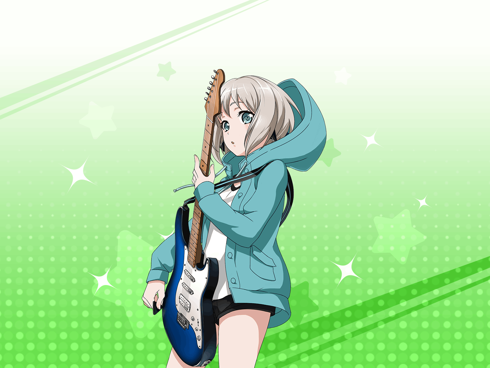

モカ
ん〜……
このソファ気持ちいいー
蘭
……モカの部屋にも、
似たようなソファあるよね？
モカ
あるけど、なーんかこっちの方が
フカフカしてる気がするんだよね〜
蘭
……ライブ前なんだから
少しは気を引き締めた方がいいんじゃない？
モカ
ん〜？
大丈夫だよー
蘭
…………
蘭
でも、あたしこれから衣装に着替えるし
モカ
あたしのことならお気になさらず〜
蘭
……モカは……やっぱりいいや
蘭
……もう着替えないと、
間に合わないよね
モカ
ひゅー、蘭ちゃんセクシー
蘭
なに、セクシーって
モカ
ほら、蘭の衣装って肩出てるし！
蘭
くだらないこと言ってないで、
モカも早く準備しなよ
モカ
もう準備は全部終わってるよ。
衣装だって着替えたしね〜
蘭
曲順と演出の確認は？
モカ
そんなのしなくたって、だいじょ〜ぶ。
ちゃんと覚えてるよ〜
蘭
……でも、確認ぐらいした方がいい
モカ
蘭は真面目だなぁ。
ライブ前だからこそ、
こうやってゴロゴロするのが一番なのに
蘭
モカはライブ前だろうがいつだろうが、
そのままじゃん
モカ
ふっふっふ〜、蘭くんとやら……
いつでも自然体が一番なんですぞ〜
蘭
……あ、だから、衣装が長袖なの？
モカの衣装って私服っぽいよね
モカ
確かに私服を意識してるけど、
一番こだわったのはフードだよ〜
蘭
どういうこと？
モカ
それはね〜……
蘭
……衣装の話してるのになんで寝転がるの？
モカ
衣装の説明するためだって。
まずはこうやって寝っ転がるでしょー
モカ
そしてフードをかぶると、
夜みたいに暗くなるから……
モカ
これで、いつでも寝ることができ……
モカ
すぅ……すぅ……
蘭
ちょっ、ライブ前に何寝てるんだよ！？
ほら、起きて……！
モカ
ん〜……おはよー。
もうちょっと寝たかったな〜
蘭
まったく、モカは……
ふふ、緊張のかけらもないね
モカ
おー、やっと笑ったね蘭！
モカ
蘭さー、今日ず〜っと怖い顔してたでしょ。
そんなんじゃ、ライブ楽しめないよ〜
蘭
え……？
もしかして、だからここにいたわけ？
あたしを笑わせるために……？
モカ
やっぱ蘭は笑顔がいいよね〜
モカ
ふぁ〜、蘭が笑ったの見たら
安心して眠くなってきちゃったよ〜……
モカ
それじゃあ、おやすみ〜
蘭
ちょっ、だから寝るなって！